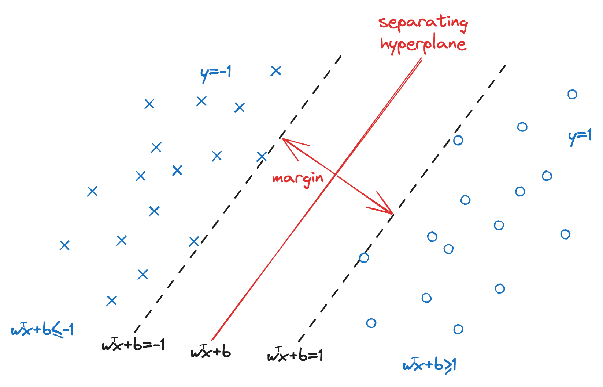
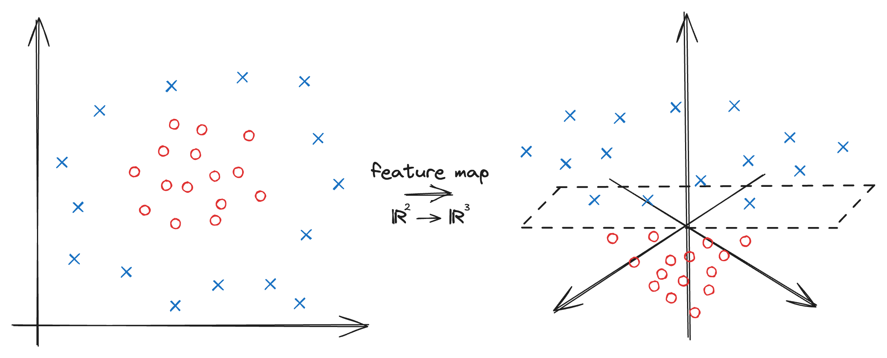

Support Vector Machine (SVM) is a well-known method to find a hyperplane between two datasets by it Lagrange dual problem. Furthermore, we could compute SVM in a higher dimension feature space by simply leveraging a kernel trick to the Lagrange dual problem. In light of this, we first introduce the dual problem of linear SVM without the kernel trick.

Suppose we have a dataset \((\mathbf{x}_1,y_1),\dots,(\mathbf{x}_n,y_n)\) where \(y_i=\pm1\) is binary for simplicity. Finding a hyperplane \(\mathbf{w}^\top\mathbf{x+b}\) to separate the dataset such that the largest margin between the separated datasets (\(\mathbf{w}^\top\mathbf{x+b}\pm1\)) is equivalent to the following optimization problem: $$ \begin{aligned} \max\ &\frac{2}{\|\mathbf{w}\|}\\ \text{s.t. }\ &y_i(\mathbf{w}^\top\mathbf{x}_i+\mathbf{b})\geq1,\ i=1,\dots,n \end{aligned} $$
We write an equivalent minimization problem as follows: $$ \begin{aligned} \min\ &\frac{1}{2}\|\mathbf{w}\|^2\\ \text{s.t. }\ &y_i(\mathbf{w}^\top\mathbf{x}_i+\mathbf{b})\geq1,\ i=1,\dots,n \end{aligned}\tag{1} $$
The Lagrangian of Problem \((1)\) can be written as follows: $$ \mathcal{L}(\mathbf{w,b},\lambda)=\frac{1}{2}\|\mathbf{w}\|^2+\sum_{i=1}^n\lambda_i[-y_i(\mathbf{w}^\top\mathbf{x}_i+\mathbf{b})+1] $$
Consider the KKT conditions, we have the first-order conditions:
$$ \begin{aligned} \frac{\partial}{\partial\mathbf{w}}\mathcal{L}(\mathbf{w,b},\lambda)&=\mathbf{w}-\sum_{i=1}^n\lambda_iy_i\mathbf{x}_i=0\\ \frac{\partial}{\partial\mathbf{b}}\mathcal{L}(\mathbf{w,b},\lambda)&=-\sum_{i=1}^n\lambda_iy_i=0 \end{aligned} $$
Complementary slackness and dual feasibility: $$ \lambda_i[-y_i(\mathbf{w}^\top\mathbf{x}_i+\mathbf{b})+1]=0,\ \lambda_i\geq0,\ i=1,\dots,n $$
Substituting the first-order conditions back to the Lagrangian and complementary slackness: $$ \begin{aligned} \mathcal{L}(\mathbf{w,b},\lambda)&=\frac{1}{2}\|\mathbf{w}\|^2+\sum_{i=1}^n\lambda_i[-y_i(\mathbf{w}^\top\mathbf{x}_i+\mathbf{b})+1]\\ &=\frac{1}{2}\|\mathbf{w}\|^2-\underbrace{\sum_{i=1}^n(\lambda_iy_i\mathbf{x})^\top}_{\mathbf{w}}\mathbf{w}-\underbrace{\sum_{i=1}^n\lambda_iy_i}_\mathbf{0}\mathbf{b}+\sum_{i=1}^n\lambda_i\\ &=\sum_{i=1}^n\lambda_i-\frac{1}{2}\|\mathbf{w}\|^2 =\sum_{i=1}^n\lambda_i-\frac{1}{2}\sum_{i=1}^n\sum_{j=1}^n\lambda_i\lambda_jy_iy_j\mathbf{x}_i^\top\mathbf{x}_j \end{aligned} $$
Together, we get the Lagrange dual problem: $$ \begin{aligned} \max\ &\sum_{i=1}^n\lambda_i-\frac{1}{2}\sum_{i=1}^n\sum_{j=1}^n\lambda_i\lambda_jy_iy_j\mathbf{x}_i^\top\mathbf{x}_j\\ \text{s.t. }\ &\sum_{i=1}^n\lambda_iy_i=0\\ &\lambda_i\geq0,\ i=1,\dots,n \end{aligned}\tag{2} $$
Complementary slackness is not used here, still figuring why.

Now we have an intuition that finding a hyperplane is equivalent to solving the dual problem \((2)\). However, this is only solvable when the data is linear separable. For non-separable cases, a common strategy is to transform the data space to a higher dimension \(\mathbf{x}\to\mathbf{x}^\prime\) such that there is there is a hyperplane that separates the transformed data \(\mathbf{x}^\prime\). Accordingly, we need to find a feature map \(\psi(\cdot)\) such that \(\psi(\mathbf{x})=\mathbf{x}^\prime\). The idea is that instead of computing the feature map \(\psi\), we compute the kernel of the higher dimensional space instead. It turns out that we can efficiently solve SVM by the kernel trick with the dual problem, where the objective function in Problem \((2)\) with the kernel trick is as follows: $$ \sum_{i=1}^n\lambda_i-\frac{1}{2}\sum_{i=1}^n\sum_{j=1}^n\lambda_i\lambda_jy_iy_j\underbrace{\psi(\mathbf{x}_i)^\top\psi(\mathbf{x}_j)}_{K(\mathbf{x}_i,\mathbf{x}_j)} $$
Commonly used kernels are summarized as follows:
- linear kernel: \(K(\mathbf{x}_i,\mathbf{x}_j)=\mathbf{x}_i^\top\mathbf{x}_j\)
- polynomial kernel: \(K(\mathbf{x}_i,\mathbf{x}_j)=(\gamma\mathbf{x}_i^\top\mathbf{x}_j+r)^p\)
- Sigmoid kernel: \(K(\mathbf{x}_i,\mathbf{x}_j)=\tanh(\gamma\mathbf{x}_i^\top\mathbf{x}_j+r)\)
- Gaussian (RBF) kernel: \(K(\mathbf{x}_i,\mathbf{x}_j)=\exp(-\frac{1}{2\sigma}\|\mathbf{x}_i-\mathbf{x}_j\|^2)\)